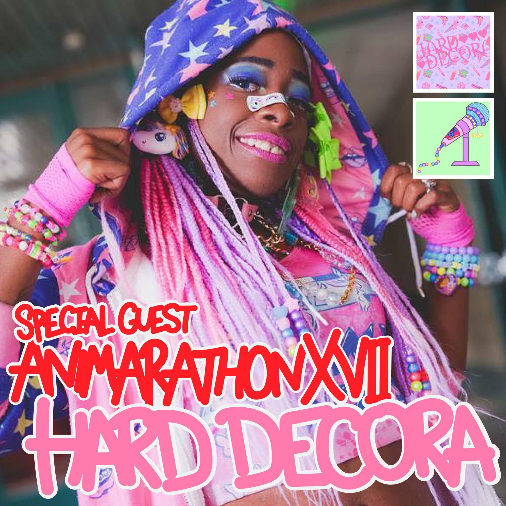

Special Guests
Special Guests for Animarathon XVII are rolling in now!
Vocaloid IA
IA is a virtual artist who has a voice with the VOCALOID 3 library (IA -ARIA ON THE PLANETES and IA ROCKS)
and with the CeVIO library (IA English). Since she was born as a virtual artist in 2012, she has been collaborating
with various artists such as TeddyLoid and Jin on projects such as the Kagerou Project.
Her first live concert in North America was in July 2015, at the Los Angeles Anime Expo, in front of a
sold-out crowd of two thousand. Since then it's been nothing but great news from this vocaloid with a
world tour in cities such as New York; London; Shanghai; Hong Kong; Mexico City; San Jose, Costa Rica; Melbourne;
Montreal; Santiago, Chile; and Madrid.
Please come support IA's Animarathon debut.
This year we will be showing a film concert, and afterwards there will be a special IA merchandise raffle for the first 40 people to fill out this survey! https://goo.gl/forms/nH8HYKunyah6nY4K2
Hard Decora -- Kamillah Jones

"Hard Decora is an apparel and illustration brand that promotes aggressive individuality. Kamilah Jones started Hard Decora in 2014 after being inspired by a single photo
on Tumblr of a fairy kei girl carrying a pastel gun. What if there was Harajuku fashion girl gang that could stand up for themselves? and that's not so far out of the realm
of reality because when we wear these bold clothes we are challenging the status quo by just existing. However, a lot of us keep our greatest expression to ourselves.
That's why Hard Decora creates work that does the defending for you."
Kamilah Jones will be bringing their brand to Animarathon as well as hosting j-fashion related panels throughout the weekend! Kamilah will also be one of our special guests for the Lolita Tea Party.
Puvithel
"Puvithel is a alternative fashion designer who has been making and designing original handmade jewelry, accessories, clothing and handbags for J-fashion and alternative styles since.
While currently based in Pittsburgh, Puvithel started in Atlanta back in 2015! Puvithel is about unabashed, self-expression and spans many styles, including punk, goth, lolita, and menhera.
However regardless of style, Puvithel's items are loud,inspired by the in-your-face aesthetic of American goth fashion.
Expression in the form of fashion can help people, and Puvithel tries to express that idea in each item.
Every series has its own style and narrative to aid you in telling your own story."
Puvithel will be bringing their brand to Animarathon as well as hosting j-fashion related panels throughout the weekend- including a DIY Floral Headband workshop! She will also be one of our special guests for the Lolita Tea Party.
Check up on this page to be updated on the special guests that will be featured at Animarathon XVII! Each year Animarathon invites special guests to Bowling Green Ohio to interact with fans and speak about their work. Previous Animarathon Special Guests have included Voice Actors and Actresses, Artists, Writers, Online Personas, and more!